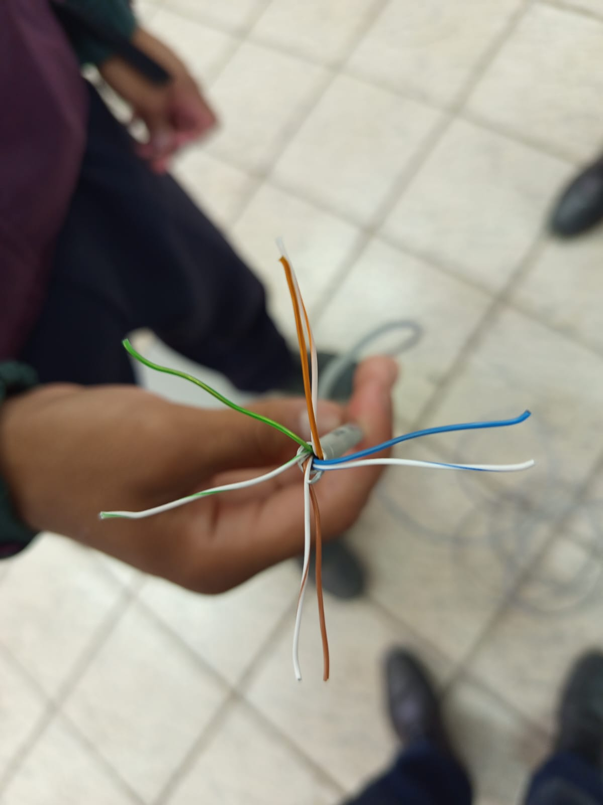
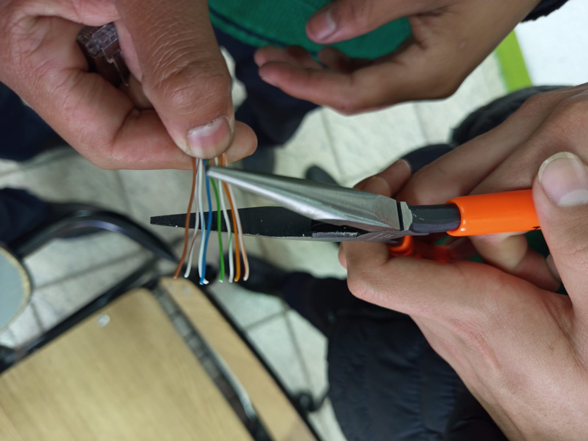
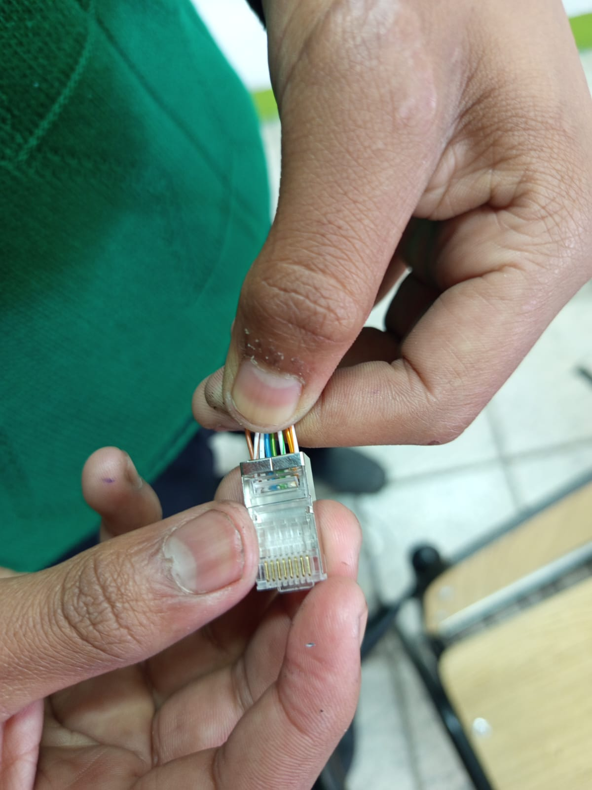
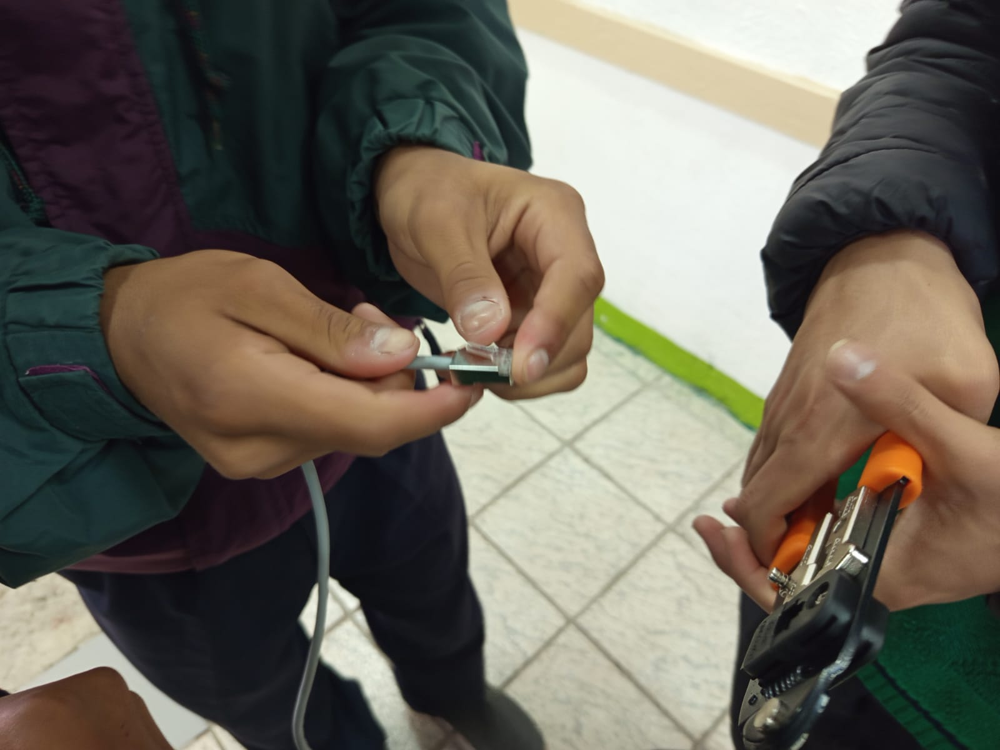

Instrucciones para crear un cable UTP
Paso 1: Pelar el cable UTP
Utilice un pelacables para pelar el cable UTP y exponer los hilos internos.

Paso 2: Ordenar los hilos
Ordene los hilos del cable UTP según el estándar T568A o T568B.
Paso 3: Cortar los hilos
Corte los hilos del cable UTP a la longitud deseada utilizando un cortador de cables.
Paso 4: Insertar los hilos en el conector RJ45
Inserte los hilos del cable UTP en el conector RJ45 según el estándar T568A o T568B.
Paso 5: Crimpstrar el conector RJ45
Crimpste el conector RJ45 utilizando una crimpadora para asegurar los hilos en su lugar.
 Regresar a la página principal Ir a los materiales Ir a las conclusiones